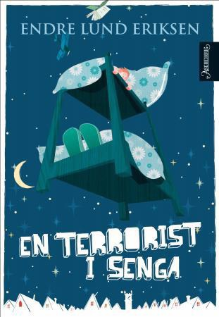

Den er riktig nok nevnt i en bisetning, og forfatteren har ikke gjort så veldig stort nummer ut av den. Hva da? Hvor da? tenker du kanskje. Vi snakker selvfølgelig om tissen til Ali. Han i En terrorist i senga, vet du? Den boka av Endre Lund Eriksen (Aschehoug 2008).
Hovedpersonen Adrian har våkna på natta av at Ali (som ser ut som en helt vanlig ungdom, men som viser seg å være en alien, men det er ikke poenget her), som han smugla inn på soverommet sitt i går kveld, står kliss naken ved bokhylla og tisser i sykkelflaska til Adrian.
Æææææsj!!
Ja, det med sykkelflaska er litt æsj, det er de fleste av elevene enige om. Den lille passasjen genererer likefullt helt fine, moralsk orienterte diskusjoner. Er det for eksempel greit å tisse på noen sin sykkelflaske? I hvilke situasjoner er det i så fall greit?
Men! Det de virkelig lurer på er hvor stor tissen til Ali faktisk er. For i følge Adrian er tissen til Ali ganske så stor, men hvor stor er en ganske stor tiss? Det var ni (eller var det ti?) klasser som hadde lest En terrorist i senga. Og akkurat det spørsmålet ble stemt frem i samtlige grupper.

Fristende sensur og (u)sunn disposisjon av makt
Som samtaleleder er det potensielt fristende å nappe ut slike spørsmål fra bunken. Dessuten er det mulig! Man kan bare late som om flertallet sa nei, det er det jo ingen som vet! Og som voksen kan det muligens være fristende å si at det spørsmålet ikke er relevant. Argumentere, kanskje rødmende til og med, for at det jo bare er en tullete detalj; ikke viktig.
Men hvem avgjør hvilke detaljer som er viktige – eller relevante – i en tekst?
At en voksen (eller hvem som helst) bestemmer – eller korrigerer – hva som er verdt å feste seg med i en fortelling, vil antagelig forringe leseopplevelsen noe, senke iveren etter å gi seg i kast med neste roman; ut i et nytt eventyr. Og kanskje særlig i en periode hvor man ikke ennå har grep om sin identitet som leser.
Det er riktig nok, mest sannsynlig, svært begrenset hvor ofte det er aktuelt å trekke frem kjønnsorganer i et bokbad på mellomtrinnet, men når det først står der… det står der, altså har det relevans. Dessuten har forfatteren skrevet det, så sannsynligheten er stor for at hen syns det er greit å både svare på og snakke om. (Noe annet ville jo ærlig talt blitt litt dumt).
I akkurat dette tilfellet ble det slik at Lund Eriksen fikk spørsmålet i samtlige av de seks arrangementene i Buen kulturhus. Og han svarte villig vekk.
Denne uka er vi sammen med 7. trinn på Vingar og Røyslimoen skoler i Lillehammer. Vi har samtalt om boka «Lappjævel» av Kathrine Nedrejord, og det er ingen tvil at boka har engasjert voldsomt. Det er også sterkt å oppleve hvor reflekterte de er, og hvordan de – uten å planlegge det – trekker paralleller til egne liv og erfaringer.
Mandag møter elevene forfatteren på biblioteket – og etter en liten samtale mellom henne og de tre som skal intervjue, er det klart for Barnebokbad på biblioteket klokka 10.00.
– Det blir litt som Bro, bro, brille, fortsetter hun. – Den som har flest vinner kampen.
– Hvilken kamp?
– Tja. Kampen om sannheten, livet, døden og alt det andre. Den som har flest sjeler får rett, kan du si.
(fra Discosatan, Aschehoug 2015)
At Discosatan ble shortlistet til Bokslukerprisen i 2016, var en slags forløsning i arbeidet og utviklingen av Barnebokbad – og metoden bak. Vi trengte «en Vera» til piloten. Det var helt nødvendig å sikre alt som sikres kunne, for å ha 100 % kontroll på – og kunnskap om – hva som faktisk gikk galt, hvis noe gikk galt.
Det var ikke allverden som gikk galt – men vi lærte utrolig mye av det, nettopp fordi Vera er Vera.
I stedet for å utbrodere så foreslår jeg at du skaffer deg Discosatan og leser den (den fortjener å bli lest – også av voksne). Og så setter du av en time uten varslinger og e-post, og ser gjennom denne samtalen. Om ikke annet for å kjenne etter om du syns at Satan er litt for sterkt for barn.
Måten hun tar imot spørsmålene deres, måten hun av og til spiller dem tilbake, og det alvoret og den respekten hun møter refleksjonene deres med … Hun lytter til dem. Med begge ørene.
Når dommedag kommer, teller Gud og Satan opp hvor mange sjeler de har, og så vinner den som har flest.
Jeg vet ikke hvor det blir av alle sjelene – ei heller Vera Micaelsens, men jeg føler meg nokså sikker på at hun ikke har vært til forhandlinger hos djevelens advokat.
Vel. I lige måde, sier jeg! Denne tilbakemeldingen kom fra Kaja Westermoen Hovstøl. Kaja er lærer for det som var 6b (nå 7b), ved Furulunden skole i Mandal. De var en del av Rabalder-festivalen, som var DKS-tilbudet i kommunen denne våren.
Hei Vilde :) Takk for et supert opplegg! Vi har virkelig kost oss. Det har vært meget spennende å være med og ikke minst lærerikt.
Klassen synes timene på skolen ble gøyere og gøyere ettersom de skjønte mer og mer av opplegget. De klarte å reflektere over tekst på en annen måte enn tidligere, og de fikk virkelig dykket dypt inn i en tekst. Vi har jo aldri gått så i dybden i ei bok før :)
Selve opplegget i Buen var jo knallbra! Jeg er så stolt av panelet og synes de klarte seg utmerket. Det har vært meget lærerikt for de som var med, og de vokste rimelig mye på selvtillit den dagen.
I ettertid vil vi kunne referere til dette opplegget. Vi har lært en ny måte å gå i dybden på tekst, og vi vil kunne jobbe med spørsmål på din måte. Dette er noe både jeg og elevene vil huske!
Takk igjen for knallgøye timer. Mvh Kaja og 6b på Furulunden Mandal, 3. mai 2018
Boka de hadde lest – og diskutert – var En terrorist i senga (Aschehoug, 2008). Og herlighet så trivelig det er, når folk sier høyt at de har hatt det fint.
Navnet skjemmer ingen, sies det – og det er kanskje sant, men ofte må det likevel forklares. For seminardeltakere, for eksempel, som nesten hver gang påpeker: men dette må jo kunne fungere for andre grupper også? Og for lærere – og andre – som kanskje ikke helt makter å få øye på prosessen bak produktet. Og dette handler om prosessen.
Og for våre venner i Danmark, som ikke engang bruker begrepet bokbad, sier det seg selv at Barnebokbad … vel, det gir absolutt ingen mening.
Uansett, her er forklaringen bak navnet:
Det er våren 2016, og vi hadde trommet sammen alle samarbeidspartnerne som skulle være med på piloten. Foreningen !les hadde ordnet skoleklasser og boka var plukket fra kortlisten til Bokslukerprisen, Vera Micaelsen var forespurt og bekreftet, biblioteket på Lillehammer og Norsk litteraturfestival … alt var klart. Så kom det brått til det punktet at programposten trengte et navn! Dette skulle jo være et arrangement under festivalen – og programmet var på vei i trykken. Men det var jo så lett, for dette var jo et Barnebokbad (takk til Widar Aspeli for forslaget), og Barnebokbad ble det.
Vel. Arrangementet var – og er! – et Barnebokbad, og før vi visste ordet av det, sprang ordet av sted på egenhånd.
Så enn så lenge opererer vi med Barnebokbad – metoden bak. Og har du et forslag til hva metoden kan hete, så kom gjerne med det!